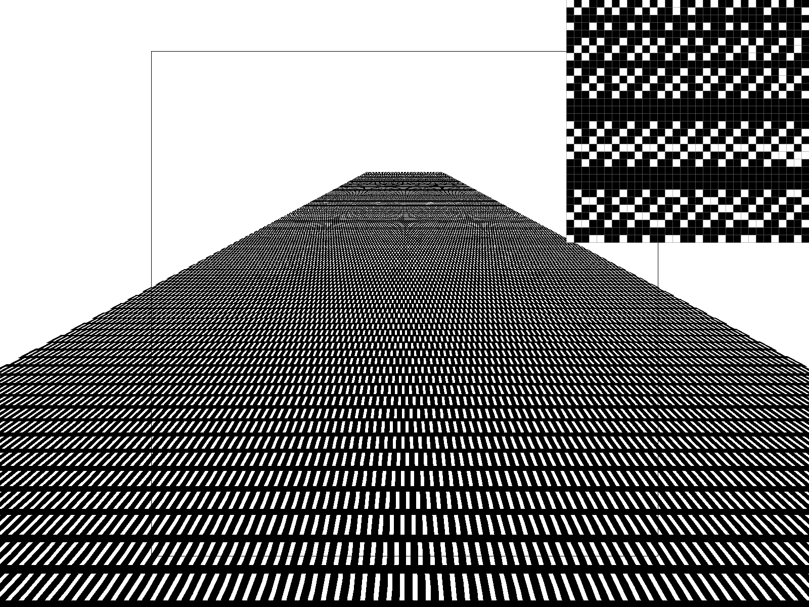
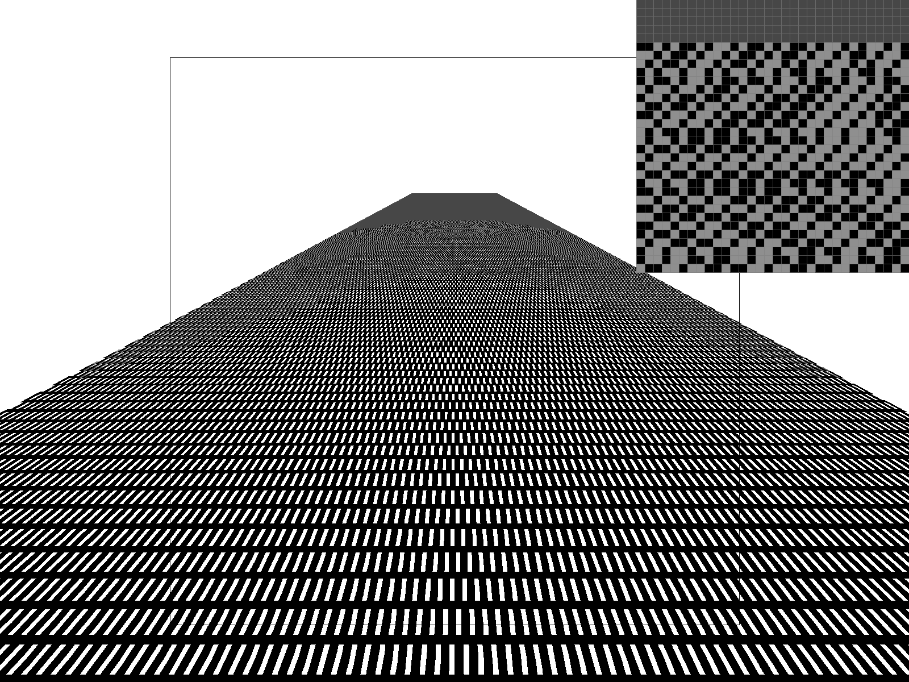
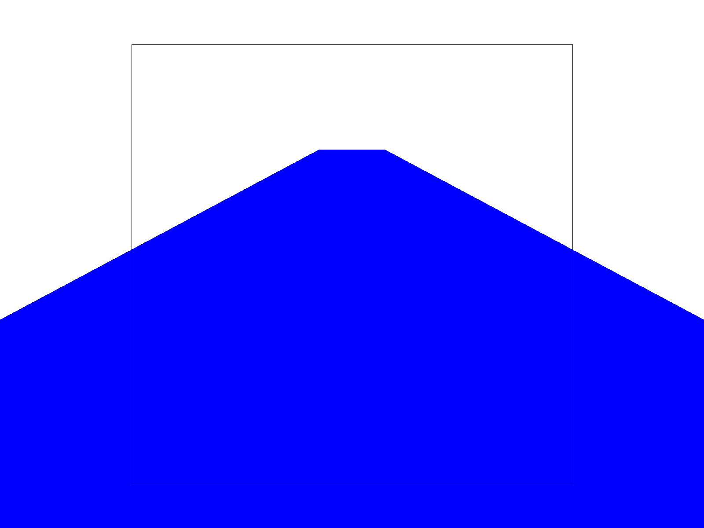
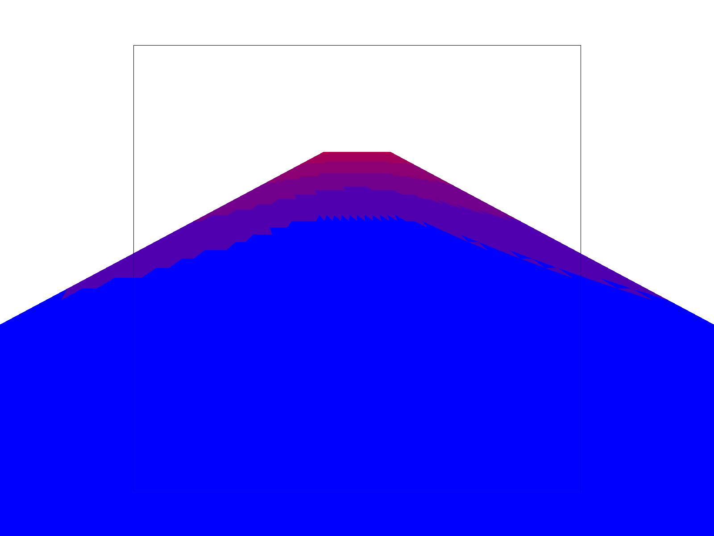
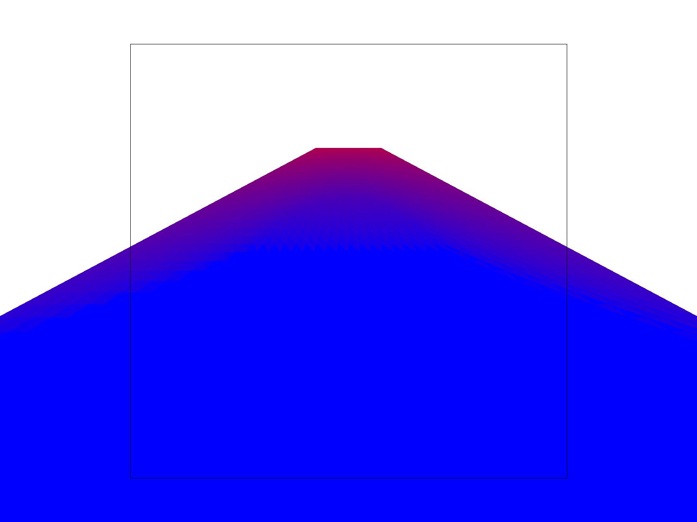
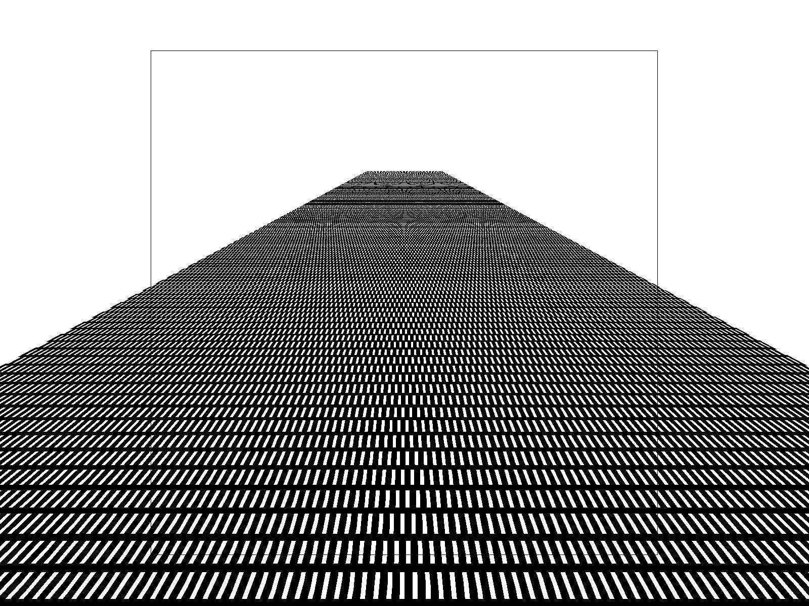
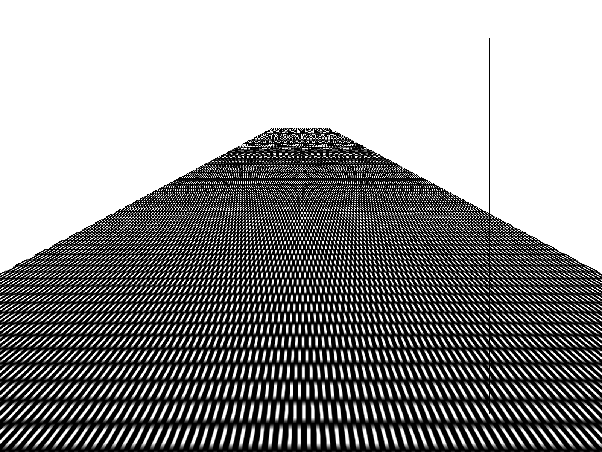
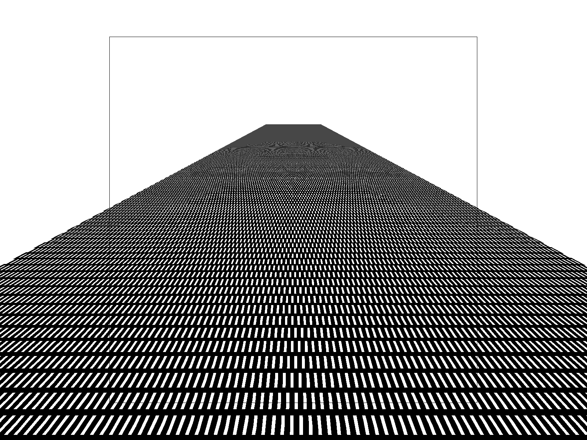
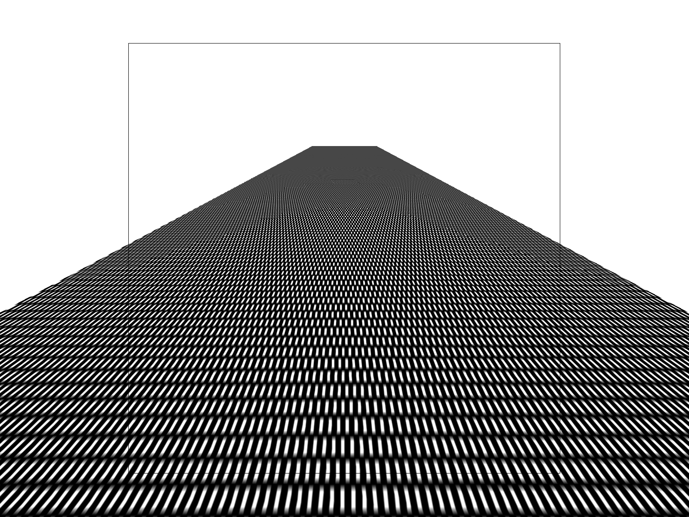

Task 6: “Level sampling” with mipmaps for texture mapping
Explaining Level Sampling
Level sampling is an antialiasing technique used in texture mapping to solve the problem of minification—when a texture is applied to an object that appears much smaller on the screen than the texture's native resolution. Without level sampling, sampling a high-frequency texture across a small number of pixels leads to severe aliasing artifacts due to the Nyquist theorem (moiré patterns).
Level sampling addresses this by precomputing a pyramid of progressively downsampled versions of the texture called mipmaps. If a pixel covers a large area of the texture, we sample from a higher, lower-resolution mipmap level. This ensures that the texture frequency roughly matches the sampling frequency of the pixels, effectively acting as a low-pass filter to eliminate high-frequency noise.
Implementation
My implementation contains three main components: estimating the texture footprint, calculating the correct mipmap level, and executing the appropriate sampling strategy.
-
Estimating the Texture Footprint (
rasterize_textured_triangle)To determine how much texture space a single screen pixel covers, we need to calculate the rate of change of the texture coordinates \((u, v)\) with respect to the screen coordinates \((x, y)\). I achieved this by computing the barycentric coordinates for the current pixel \((x, y)\), and for its adjacent neighbors at \((x+1, y)\) and \((x, y+1)\).
Using the linear property of edge functions, the edge function value \(L_i\) changes by a constant amount when stepping exactly \(1\) pixel horizontally or vertically (the optimization in Task 1).
Using these updated edge functions, I calculated the new barycentric coordinates and the \((u, v)\) coordinates for the \((x+1, y)\) and \((x, y+1)\). These are passed to the sampling function as
p_dx_uvandp_dy_uvwithin theSampleParamsstruct. -
Calculating the Mipmap Level (
Texture::get_level)Once the texture coordinates for the current pixel and its neighbors are known, the finite differences can be used to approximate the partial derivatives:
\[ \frac{du}{dx} \approx u(x+1,y) - u(x,y) \quad \quad \frac{dv}{dx} \approx v(x+1,y) - v(x,y)\\\frac{du}{dy} \approx u(x,y+1) - u(x,y) \quad \quad \frac{dv}{dy} \approx v(x,y+1) - v(x,y) \]Because \((u, v)\) are normalized coordinates in the \([0, 1]\) range, I multiplied these differences by the texture's
widthandheightto scale them into texel space.To ensure we don't alias in the direction of greatest stretch, I took the maximum of the lengths of the two difference vectors:
\[ L = \max\left( \sqrt{\left(\frac{du}{dx}\right)^2 + \left(\frac{dv}{dx}\right)^2}, \sqrt{\left(\frac{du}{dy}\right)^2 + \left(\frac{dv}{dy}\right)^2} \right) \]Finally, the continuous mipmap level \(D\) is computed as:
\[ D = \log_2(\max(L, 1.0)) \] -
Level Sampling Strategies (
Texture::sample)The
samplefunction acts as the core dispatcher, handling combinations of Level Sampling Methods (lsm) and Pixel Sampling Methods (psm):L_ZERO: Ignores the computed level and samples from the base level 0 (full resolution).L_NEAREST: Takes the continuous level \(D\), rounds it to the nearest integer, clamps it to the valid range \([0, \text{mipmap.size()} - 1]\), and samples from that discrete level.L_LINEAR: Calculates \(D\), then bounds it between the adjacent lower and upper integer levels by using the functionfloorandceil. It samples the color from both levels and performs a linear interpolation based on \(D\). When paired withP_LINEAR, this achieves full trilinear filtering.
Visualizing Mipmap levels
To better illustrate the differences between these mipmap sampling methods, I used an LLM to generate a custom grid texture and applied it to a plane with extreme perspective distortion. The original provided images lacked the significant depth scaling required to clearly show mipmap transitions.
I also implemented a debug mode (toggled via the 'D' key) that maps the sampled mipmap level to a color gradient—ranging from blue (level 0) to red (highest level).





L_ZERO(Level 0 Only): As seen in the debug view, the entire plane is sampled at level 0 (blue). Looking at the texture render, the distant parts of the grid collapse into a aliased moiré pattern because the high-frequency grid lines cannot be represented by the sparse pixel sampling rate.L_NEAREST(Nearest Level): The debug view shows discrete bands of color as the renderer switches from one integer mipmap level to the next. In the texture render, this causes noticeable sharp transitions in blurriness as the grid recedes into the distance.L_LINEAR(Linear Level Interpolation): The debug view displays a perfectly smooth gradient from blue to red, indicating continuous transitions between levels. In the texture render, the sharp transitions are entirely eliminated.
Tradeoffs: Speed, Memory, and Antialiasing Power
| Sampling Technique | Configuration | Avg. Render Time | Buffer Memory |
|---|---|---|---|
| Baseline | L_ZERO, P_NEAREST, 1x SS | ~14.1 ms | 28,125 KB |
| Pixel Sampling | L_ZERO, P_LINEAR, 1x SS | ~27.1 ms | 28,125 KB |
| Level Sampling (Nearest) | L_NEAREST, P_NEAREST, 1x SS | ~25.7 ms | 28,125 KB |
| Level Sampling (Linear) | L_LINEAR, P_NEAREST, 1x SS | ~37.2 ms | 28,125 KB |
| Supersampling (4x) | L_ZERO, P_NEAREST, 4x SS | ~53.1 ms | 95,625 KB |
| Supersampling (9x) | L_ZERO, P_NEAREST, 9x SS | ~115.5 ms | 208,125 KB |
| Supersampling (16x) | L_ZERO, P_NEAREST, 16x SS | ~201.3 ms | 365,625 KB |
Speed
- Pixel Sampling: Switching from
P_NEARESTtoP_LINEARroughly doubled the render time because it requires fetching four texels instead of one and performing 2D interpolation. - Level Sampling: Calculating the mipmap level adds overhead (although the mipmap pyramid is still generated during initialization, regardless of the sampling method).
L_NEARESTincreased time to 25.7 ms.L_LINEARwas the most expensive texture filtering method at 37.2 ms. - Supersampling: Render times scaled almost linearly with the sample rate. 16x supersampling caused the render time to increase to over 201 ms (a ~14x increase over the baseline).
Memory
- Pixel & Level Sampling: As shown in the data, the sample buffer memory remains constant at 28,125 KB regardless of the pixel or level sampling method. However, storing the mipmap pyramid itself inherently requires about 33% more texture memory than a single high-resolution texture.
- Supersampling: Memory usage explodes as the sample rate increases. Moving from 1x to 16x supersampling increased the buffer memory from 28 MB to over 365 MB.
Antialiasing Power
- Pixel Sampling:
P_LINEAReffectively smooths out blocky textures when magnification happens, but fails to fix high-frequency noise and moiré patterns in minification. - Level Sampling: Mipmapping directly solves minification aliasing. By sampling from lower-resolution textures, it eliminates moiré patterns perfectly. However, it does not fix jagged polygon edges.
- Supersampling: It fixes both texture aliasing and geometric edge jaggies, but at a massive cost to both speed and memory.
Result Screenshot




The screenshots above are images of the checkerboard I generated.
L_ZEROandP_NEAREST: Without any filtering, this produces the worst result. The foreground pixels look blocky, while the distant parts of the grid collapse into moiré pattern.L_ZEROandP_LINEAR: Bilinear pixel filtering smooths out the grid lines slightly in the foreground, making them look a bit softer. However, because it still strictly samples from the full-resolution texture, the distant moiré patterns remain completely unresolved.L_NEARESTandP_NEAREST: By enabling nearest-level mipmapping, the distant moiré patterns are successfully eliminated. The grid fades into a gray blur in the distance. However, because we are using nearest logic on both the level and the pixels, we can clearly see sharp transitions horizontally across the image.L_NEARESTandP_LINEAR: This combination eliminates the distance moiré while simultaneously softening the internal details of the grid within each level band. However, the sharp transition between the different mipmap levels are still visible. Only by upgrading toL_LINEARwould solve that problem.